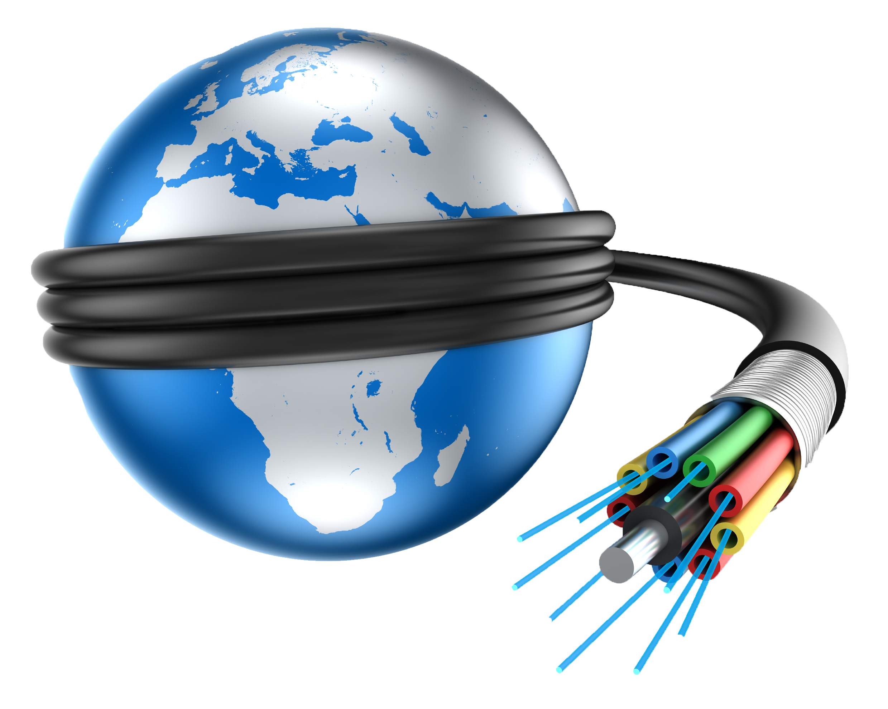
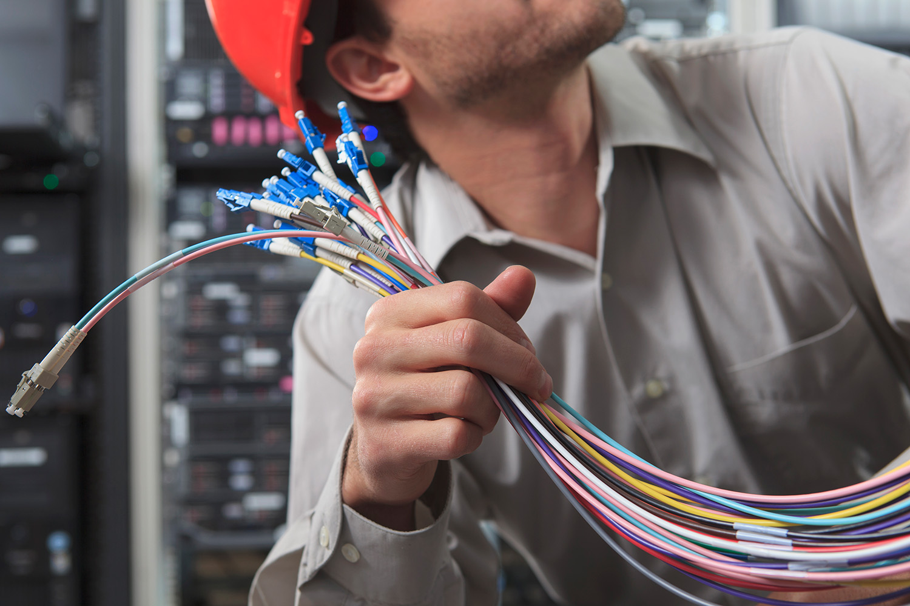

Fibra Óptica
A InterPoint BP oferece serviços de fibra óptica de alta qualidade, garantindo conexão rápida, estável e segura para clientes residenciais e empresariais. Também realizamos manutenção e conserto de cabos de fibra óptica para assegurar que sua conexão esteja sempre funcionando com o melhor desempenho.

Conheça a tecnologia que transforma a forma como navegamos: a fibra óptica utiliza feixes de luz para transmitir dados em alta velocidade, com baixa latência e alta confiabilidade.

Nossa equipe especializada realiza o conserto de cabos e instalações de fibra óptica, garantindo que qualquer problema seja resolvido rapidamente para manter sua internet sempre ativa.
Planos de Fibra Óptica
Plano Básico
100 Mbps
Ideal para navegação e streaming
Plano Intermediário
300 Mbps
Perfeito para jogos e home office
Plano Avançado
500 Mbps
Para quem precisa de alta performance